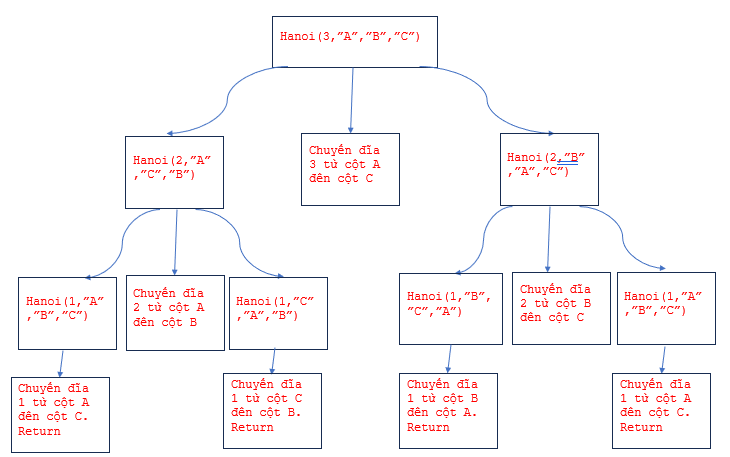
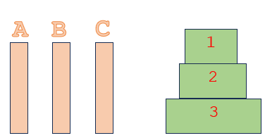

Bài toán tháp Hà Nội - dùng phương pháp đệ quy top-down intuition
Bài toán tháp Hà Nội là một bài toán classic trong lý thuyết đệ quy và tìm kiếm. Bài toán này mô phỏng việc di chuyển một số đĩa đặt trên một trụ A sang một trụ C thông qua một trụ trung gian B, với điều kiện rằng đĩa nhỏ phải nằm trên đĩa lớn. Mục tiêu là di chuyển tất cả các đĩa từ trụ A sang trụ C bằng cách sử dụng một trụ trung gian mà không vi phạm điều kiện trên.
Quy tắc di chuyển trong bài toán Tháp Hà Nội như sau:
- Chỉ có thể di chuyển một đĩa vào một lần.
- Chỉ có thể đặt đĩa lớn hơn lên trên đĩa nhỏ hơn.
- Các đĩa phải được di chuyển từ một trụ này sang trụ khác mà không sử dụng trụ thứ ba làm trung gian.
- Xác định subproblem (bài toán nhỏ hơn bài toán ban đầu): nếu n là số đĩa ban đầu, thì subproblem là n-1
- Gọi hàm Hanoi, coi như hàm này đã hoạt động, ta sẽ gọi hàm này và áp dụng vào subproblem.
- Gọi “source” là cột đầu tiên, “auxi” là cột trung gian và “dest” là cột cần chuyển số đĩa đến sau cùng.
Giả sử ta gọi Hanoi(n-1) hoạt động, thì ta cần ít nhất 3 bước:
- Hanoi(n-1) đã làm được nhiệm vụ chuyển tất cả đĩa từ cột source đến cột auxi.
- Lúc này chỉ còn một đĩa sau cùng (là đĩa đầu tiên – đĩa 1): ta chuyển cột này đến vị trí dest.
- bước sau cùng ta gọi tiếp cột Hanoi(n-1), coi như hàm này đã “hoạt động như ý” và chuyển tất cả n-1 đĩa từ auxi đến cột đích.
- Base case trong trường hợp này là khi chỉ có một đĩa, lúc này ta sẽ chuyển từ cột source đến cột dest.
Cây đệ quy khi n=3

Nhìn vào sơ đồ trên, đọc từ dưới lên trên, từ trái sang phải, nếu gặp Return thì dừng, ta sẽ có thứ tự sau:
- Chuyển đĩa 1 từ cột A đến cột C
- Chuyển đĩa 2 từ cột A đến B
- Chuyển đĩa 1 từ cột C đến cột B
- Chuyển đĩa 3 từ cột A đến cột C
- Chuyển đĩa 1 từ cột B đến A
- Chuyển đĩa 2 từ cột B đến cột C
- Chuyển đĩa 1 từ cột A đến cột C
